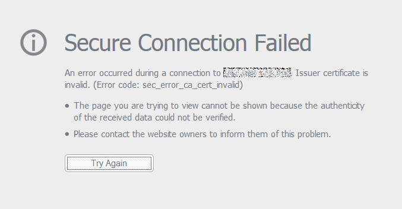

You can manually force HTTP to HTTPS after enabling your SSL certificate by adding the following condition at the beginning of your .htaccess file in your public directory:
RewriteCond %{HTTP:X-Forward-Proto} !=https
RewriteRule .* https://%{HTTP_HOST}%{REQUEST_URI} [R=301,L]
Save your file and restart your Apache server and now, your web application will redirect all your users to https:// instead of http:// URLs in the future.
As part of a project that I was working on, I learnt about HTTP Strict Transport Security protocol which tells the browser about making future web requests over HTTPS only. So, even if you attempt to use http://, the browser will force you to use https:// URLs in the future.
You can enable it by writing this header in your .htaccess file in your public directory:
Header always set Strict-Transport-Security "max-age=31536000" env=HTTPS
Please note that once you enable this protocol, your web application is committed to using SSL i.e. you won't be able to use insecure HTTP for your web application.
In my current Arch Linux installation, I decided to use a window manager called i3. It's really awesome and it comes with a really lightweight terminal emulator called urxvt. It's very minimal and I lked it but when I tried to copy-paste text from one terminal to another, I wasn't able to.
However, thanks to the internet, I did some research and figured a way out.
1. Install xClip
First, you need to ensure that you have installed the xclip package, which will be used to copy-paste text in the emulator.
Type the following command to install the package:
pacman -S xclip
2. Activate Clipboard using Perl
Now, you have to paste these custom commands into your clipboard file, which is found in /usr/lib/urxvt/perl directory:
# paste selection from clipboard
sub paste {
my ($self) = @_;
my $content = `/usr/bin/xclip -loop 1 -out -selection clipboard` ;
$self->tt_write ($content);
}
# copy text to clipbard on selection
sub on_sel_grab {
my $query = $_[0]->selection;
open (my $pipe, '| /usr/bin/xclip -in -selection clipboard') or die;
print $pipe $query;
close $pipe;
}
3. Modify your .Xresources
Add these keybindings to your .Xresources file:
URxvt.keysym.Shift-Control-V: perl:clipboard:paste
URxvt.iso14755: False
URxvt.perl-ext-common: default,clipboard
After adding it, refresh your .Xresources settings:
xrdb -merge .Xresources
Reboot your terminal and try selecting some text from your terminal using your mouse and paste it using Ctrl+Shift+V and it should work!
That's it! Enjoy 😃
Yesterday, I thought of testing my Arch Linux system's audio and turns out, I didn't even install it yet! 😒
Well, thanks to ArchWiki, it was simple enough to install to make the audio work on my old laptop. Just install the following packages:
pacman -S alsa-firmware alsa-lib alsa-utils
Reboot the system once you're done installing the packages. Depending on your window manager, you should be able to see your sound icon being active.
Bonus: Bash script to control your volume from the terminal
In my current laptop, I still haven't mapped out the keys to control the audio volume, so I thought of writing a small method in my .bashrc file, so that I can control it from my terminal.
Open your favorite text editor and Add this method in your .bashrc file:
# simple volume control
volume(){
x=5
if [ $1 == 'up' ]
then
amixer set Master $x%+ &> /dev/null
elif [ $1 == 'down' ]
then
amixer set Master $x%- &> /dev/null
elif [ $1 == 'toggle' ]
then
amixer set Master toggle &> /dev/null
fi
}
Save the file, close your edit and refresh your file by typing:
source .bashrc
Now, it should work when you type any of these commands:
volume up
volume down
volume toggle
Hope this tiny script helps you out!
As I was configuring Arch Linux setup on my old HP 8460p laptop, I noticed that I wasn't able to access any site using Chrome or Firefox as I was faced with a weird error:

I was quite confused and thought it might be an issue with my WiFi card or probably some server issue but turns out it was neither of them.
On the side of my screen, I noticed my system time was displaying 4 hours ahead of the current local time, which is wrong. So, I did a little research and turns out my suspicions were correct, it's a time-related issue.
How is time related to secure websites?
Well, each website that uses SSL or that begins with https:// are only valid for a period of time before getting expired. If the website that you're trying to visit presents a certificate with a time and date that doesn't match with your system's clock, Firefox will prevent you from accessing the page.
How to fix it?
Actually, the fix is quite simple. All you have to is just set the correct date and time on your system and you're good to go!
If you're using Linux, just do the following:
1. Set up your timezone
You can look up for your timezones by executing the following:
timedatectl list-timezones | less
Once, you've found your timezone, execute the following by replacing Continent/Country with your timezone:
timedatectl set-timezone Continent/Country
2. Manually set your local time
Execute the following to set up your time, locally on your system:
timedatectl set-time "yyyy-MM-dd hh:mm:ss"
3. Set the hardware clock from the system clock
The following command sets the hardware clock from the system clock:
hwclock --systohc
Now, that you've executed them, you should be able to view the correct time on your system by executing timedatectl status and you should see something like this:
Local time: Sun 2020-06-14 21:04:04 +04
Universal time: Sun 2020-06-14 17:04:04 UTC
RTC time: Sun 2020-06-14 17:04:05
Time zone: Asia/Dubai (+04, +0400)
System clock synchronized: no
NTP service: inactive
Although, this issue was time-related, you may face the same kind of error for various other reasons. Try reading more on how to troubleshoot errors like these from Mozilla's official documentation.
Do you want to transfer files remotely from one UNIX-based system to another? Try using the scp tool, which is a shorthand for Secure Copy Protocol. It's based off the SSH protocol using it as a means to securely transfer files from a local machine to one or more remote machines.
Here's a code snippet that can help you out to transfer from computer A to computer B:
scp your_local_file user@ipaddress:/directory_to_store
And transfer from computer B to computer A:
scp user@ipaddress:/directory/file_name your_local_directory
Oh, before you transfer files to another computer, make sure that you have permissions to access it first. If you don't have one, then create a new account using useradd on your remote system.
Recently, I thought of playing around with Arch Linux to learn more about Linux under-the-hood and to see if it can become my new daily driver.
As I booted from live USB, I tried connecting to my WiFi using wifi-menu but it never worked after selecting my network name and entering the credentials.
So, I did a little bit of research in ArchWiki and forums and I figured a way to set it up manually using netctl by myself.
netctl is a network profile manager and it's apparently an Arch Linux project.
1. Select your interface
Before you begin to set up your WiFi connection from your computer, check if your network interface is being detected:
iwconfig
Since it's a WiFi connection, your interface most probably must be wlan0. If you see it, then set the interface up:
ip link set wlan0 up
2. Scan for networks
Now, that your interface, use it to scan for your WiFi network:
iwlist wlan0 scan | less
Once, you execute this command, you must be able to see your WiFi's SSID (or network name).
Now, put your interface down for a while:
ip link set wlan0 down
3. Create a network profile
Alright, go to /etc/netctl/examples/ directory and make a copy of the wireless-wpa file to the /etc/netctl directory:
cd /etc/netctl/examples
cp /etc/netctl/examples/wireless-wpa /etc/netctl/your-wifi-name
Now, go back to /etc/netctl/ directory and open the your-wifi-name file with your preferred text editor and edit the following only:
ESSID: your-wifi-name
key: your-wifi-password
After you're done editing, save the file.
4. Test network profile
To test if your profile is working, do the following:
netctl start your-wifi-name
ping -c 3 www.google.com
In case, you get an error, try doing this:
ip link set dev wlan0 down
netctl start your-wifi-name
ping -c 3 www.google.com
If you're able to ping, then it works. Else, edit your network profile and try connecting to it again.
5. Enable network profile
If you've reached this stage that means your network profile must be working fine. Just do the following to enable the network profile to run the internet throughout the setup:
netctl enable your-wifi-name
Try reading more about using netctl in Arch Linux's official wikipage.
If you have a static site or a blog generated using a static-site generator but want to add a simple search functionality? This could be of your interest.
I'll take you through an example on how to build a simple search engine using a JSON file and AJAX requests.
1. Generate a JSON dump of your site
Although, it's not a database but it can act as an alternative to having one. Your JSON dump can contain any metadata that you wanted your users to search in your site. In my case, I thought of allowing the user to search title and category.
Is your site generated using Python and want to create a JSON dump? Read this article for more information.
2. Build search functionality
I won't go through the aspects of UI design in this article as I feel that it's subjective and depends on one's preferences but let's keep it simple enough for this tutorial.
Before you begin writing the function, place this component in your HTML template:
<div class="searchbox">
<input id="searchinput" type="text">
<div id="searchresults">
<ul></ul>
</div>
</div>
Anyway, here's the function and you can place it directly on your template or in a separate .js file:
var _url = "path-of-your-file.json";
$(document).ready(function(){
$('#searchinput').keyup(function(e){
var keyword = $(this).val();
var code = e.keyCode ? e.keyCode : e.which;
if(code == 13){
$.ajax({
url: _url,
type: "GET",
async: false,
}).done(function(data){
var results = "";
if(data.articles.length > 0){
$.each(data.articles, function(key, value){
if(v.title.search(pattern) != -1 || v.category.search(pattern) != -1){
results += `<li><a href="${v.slug}">${v.title}</a></li>`;
}
});
$("#searchresults ul").html(results);
}
});
}
});
});
That's it! Now, when you execute your script, you should be able to view your search results just like as if it were using a database.
If you want to make it similar to mine, please feel free to inspect the code on the browser or go to my repository to see how it works.
You can make use of the built-in json package in Python to read and write JSON data to a file.
Writing JSON to a file
You can store the information in a dictionary or dict object, which can contain any type of data like integers, booleans, arrays or nested objects.
By using a dict object, the json package will transform your dictionary into a serialized JSON string.
import json
dataObj = {}
dataObj['posts'] = []
dataObj['posts'].append({
'title': 'Hello world',
'category': 'Introduction',
'slug': 'hello-world'
})
with open('data.json', 'w') as file:
json.dump(dataObj, file)
Reading JSON from a file
Reading is as easy as writing to a file. Using the same package again, we can parse the JSON string directly from the file.
import json
with open('data.json', 'r') as file:
data = json.load(file)
for item in data['posts']:
print 'Title: ' + item['title']
print 'Category: ' + item['category']
print 'Slug: ' + item['slug']
I read about different package alternatives like simplejson but I guess for now, this is a great way to get started especially, if you're working with web applications and are interacting with a serialized JSON data on a daily basis.
Today, I wrote a simple method that fetches images from the database via AJAX and also, I defined an empty object as a default parameter:
function fetchImages(obj={}){
// some code here...
}
fetchImages();
The default obj parameter would contain extra parameters like id, slug and page, which would be then used to fetch a particular group of images, else, it'll fetch a random set of images.
This method worked fine in Google Chrome and Mozilla Firefox but not in Internet Explorer. I thought of inspecting the code and I was facing weird errors like undefined or Expected: ')' on the IE console.
Luckily, I had compared it to the other methods that didn't have any default parameters, so I did a little research and turns out that according to Mozilla's documentation, default function parameters are proposed by the ES6 syntax and at this point, I realized that Internet Explorer doesn't support ES6 syntax. What a bummer! 😒
However, there's a way to prevent this from happening by rewriting the method like this:
function fetchImages(obj){
// Check if obj is defined, else make it assign it as an empty object.
var data = obj || {};
// some code here...
}
And BAM! The method worked flawlessly just as it's intended to do so. 😎
Addtionally, you may refer to the ECMAScript 6 Compatibility table that you might find it quite helpful to check browser compatiblity for Internet Explorer versions 11 and under.
Hmm, what is the most efficient way to build a menu tree? 😅
Most people would go for a brute force solution if it's a straightforward menu but would that be possible if we intend to create multiple levels of menu items?
Sure, you could but as the number of loops increases, the complexity of time increases too. Not to forget, you'll end up writing code that'll look messy and unscalable.
I always loved the idea and simplicity of using recursion. So, I thought of exercising my recursion skills by writing a method that can generate a dynamic menu with x number of parent and child menu items.
The following example is written in PHP:
class FooController extends Controller {
protected $menuHTML = "";
private function menuItems() {
return [
[
'title' => 'Item 1',
'link' => '/item-1'
],
[
'title' => 'Item 2',
'link' => '/item-2',
'child_items' => [
[
'title' => 'Item 2.1',
'link' => '/item-2.1'
],
[
'title' => 'Item 2.2',
'link' => '/item-2.2'
],
]
],
[
'title' => 'Item 3',
'link' => '/item-3'
],
[
'title' => 'Item 4',
'link' => '/item-4'
],
];
}
// Build a menu tree
private function buildMenu($menu) {
foreach($menu as $menuItem){
$this->menuHTML .= '<li class="item">';
$this->menuHTML .= '<a href="'.$menuItem['link'].'">'.$menuItem['title'].'</a>';
// Check if it has any child items
if(array_key_exists("child_items", $menuItem){
$this->menuHTML .= '<ul class="submenu">';
$this->buildMenu($menuItem['child_items']);
$this->menuHTML .= '</ul>';
}
$this->menuHTML .= '</li>'
}
}
// Return the complete menu
private function getMenu($menu) {
$this->buildMenu($menu);
return '<ul class="mainmenu">'.$this->menuHTML.'</ul>';
}
public function __construct() {
pre($this->getMenu($this->menuItems());
die;
}
}
Once you run it, you'll see something like this:
<ul class="mainmenu">
<li class="item"><a href="/item-1">Item 1</a></li>
<li class="item"><a href="/item-2">Item 2</a>
<ul class="submenu">
<li class="item"><a href="/item-2.1">Item 2.1</a></li>
<li class="item"><a href="/item-2.2">Item 2.2</a></li>
</ul>
</li>
<li class="item"><a href="/item-3">Item 3</a></li>
<li class="item"><a href="/item-4">Item 4</a></li>
</ul>
There a lot of ways to achieve this same result using recursion but it sure is easier to read, scalable and extensible, ain't it?
Using CKEditor is awesome but I hate it when it removes inline elements like <span>, <i> or any DOM elements that contain attributes like classnames or ID, by default.
Well, CKEditor's documentation states that you can allow it by adding this line to your configuration:
var editor = CKEDITOR.replace('textarea_edit',{
allowedContent: true,
});
After adding this line, CKEditor will stop removing those elements from your HTML content but it's also open to all tags.
You can set rules to allow only specific ones like this:
var editor = CKEDITOR.replace('textarea_edit',{
allowedContent: 'span; i; ul; li; a[!href]'
});
Hope this helps you out! 😊
Using the event.currentTarget property which belongs to the Event interface can help you in many ways to identify target of the current event especially if you want to fetch attributes or modify the classname of an element that belongs to a group of elements sharing the same classname.
There are many examples but I chose to write a small snippet of highlighting a tab:
function highlightTab(e){
/*
Find elements that has the classname 'active'
and remove them
*/
if(document.querySelector('div.tab_item.active') !== null){
document.querySelector('div.tab_item.active').classList.remove('active');
}
// Add active class to target node
e.currentTarget.className += " active";
// Add active class to target's child node
// e.currentTarget.querySelector('a.child_anchor_link').className += " active";
// Add active class to target's parent node
// e.currentTarget.parentNode.className += " active";
}
Read Mozilla's official documentation to know more about getting the current target of an event and it's compatibility with different web browsers.
Let's look at the differences between the two data structures:
- Queues: First-In First-Out
- Stacks: Last-In Last-Out
Queues
This follows a First-In First-Out processing order i.e. the first element added to a queue will be processed first. A queue should support two operations:
- Enqueue
- Dequeue
Enqueue
Adds the element to the tail of a queue. The tail position gets incremented.
Dequeue
Removes the first element of a queue i.e. the head element. Once, it's removed, the subsequent element becomes the new head element of the queue. The position of the new head element gets incremented and the previous one is assigned a negative integer like -1 or some garbage value.
Implementation of a standard queue using C++:
class Queue {
private:
int pos;
vector<int> data;
public:
Queue() {
pos = 0;
}
bool enqueue(int value) {
data.push_back(value);
return true;
}
bool dequeue() {
if(isEmpty()){
return false;
}
pos++;
return true;
}
int front() {
return data[pos];
}
bool isEmpty() {
return pos >= data.size();
}
}
In terms of memory management, a standard Queue is quite inefficient and incapable of handling dynamic memory.
Stacks
This follows a Last-In First-Out processing order i.e. the last element added to a queue will be the first to be removed. Just like queues, it has two simple operations:
- Push
- Pop
Push
Each element is pushed towards the end of the stack. Think of it as a card deck where you stack a card on top of another card.
Pop
It removes the most recent element i.e. the newly added element from the stack.
Implementation of a stack using C++:
class Stack {
private:
vector<int> data;
public:
void push(int value) {
data.push_back(value);
}
bool isEmpty() {
return data.empty();
}
int top() {
return data.back();
}
bool pop() {
if(!isEmpty()) {
data.pop_back();
return true;
}
else {
return false;
}
}
}
Unlike queues, stacks are easier to implement and pretty efficient at managing dynamic memory.
Oh, if you ever get to use these, don't worry about implementing them, nearly all programming languages have their own implementations of stack and queue that comes with it's own standard library.
Laravel
Check if the current route exists before fetching it's parameters
Published on May 30th, 2020
If you've ever come across this type of error when you're trying to fetch parameters of the current route:
Symfony\Component\Debug\Exception\FatalThrowableError: Call to member function parameters() on null
It's probably because the route doesn't exist, which is why it failed to call the parameters() function. It can be easily resolved by checking if the route exists before calling the function:
namespace App\Http\Controllers;
use Route;
class FooController extends Controller {
public function __construct(Request $request){
// insert code here...
}
public function foo(Request $request){
$params = $request->route() ? Route::current()->parameters() : '';
return $params;
}
}
Although, the sample code above is to fetch parameters of the current route, you can apply this before calling any method from the Route class.
This works for version 5.2 and above.
If you don't want the current element to be selected in an array of elements that belongs to same class or type, just use the .not() method like the example below:
$(".btn").click(function(){
$(".btn").not(this).text('selected');
});
The above code will change the text for all buttons except the current element.
First, you need to view what's inside of the .zip archive:
unzip -v archive.zip
Once, you've found the folder you wanted to extract, just type this:
unzip archive.zip "folder_to_extract/*" -d .
In this example, we're going to change a list of .txt files to .md files:
#!/bin/bash
shopt -s nullglob
files=($(ls -v *.txt))
for file in "${files[@]}"
do
mv ${file} ${file}.md
done
You can use modify this script to rename any extension you want.
If you wanted to remove a specific pattern in a list of files, like the ones below:
23_2020_03_01_article-three.md
22_2020_02_01_article-two.md
21_2020_01_01_article-one.md
You can simply do that using Regular Expressions and the rename tool:
rename 's/[0-9]+_[0-9]+_[0-9]+_[0-9]+_//' *.md
Now, the desired output should look like this:
article-three.md
article-two.md
article-one.md
This should come in handy if you're lazy to rename each file manually! :)
This comes in handy especially whenever you want to download multiples files from a server or take backups.
zip [option] output_file input1 input2
For example: if you want to zip an entire directory with it's file contents, just do this:
zip -r myfiles.zip folder/
Want to check the specs of your system? Just type this:
lshw
Too long? Then type this for a shorter version:
lshw -short
This comes in handy if you're using the terminal in full screen but still want to know your battery life. Just type the following:
upower -i /org/freedesktop/UPower/devices/battery_BAT0
If you're hosting a laravel project via cPanel, chances are that it could be a shared hosting server and that means you can't really use php artisan storage:link for this.
But don't worry, there's another way to this. Just follow the steps below:
1. Create a symlink
In your public_html/public directory, remove the storage folder. Next, create a symlink.php file in your public_html directory and add the following code:
$targetFolder = $_SERVER['DOCUMENT_ROOT'].'/storage/app/public';
$linkedFolder = $_SERVER['DOCUMENT_ROOT'].'/public/storage';
symlink($targetFolder, $linkFolder);
echo "done";
2. Create a custom route to access storage
Alright, this is kind of a hack but it works extremely fine. Just add the following route in your routes/web.php file:
Route::get('/storage/anyfolder/{filename}', function($filename){
// Your folder path
$folder_path = storage_path('app/public/anyfolder/'.$filename);
// check if the file exists
if(!File::exists($folder_path)) {
abort(404);
}
$file = File::get($folder_path);
$type = File::mimeType($folder_path);
$response = Response::make($file, 200);
$response->header("Content-Type", $type);
return $response;
Now, you can access your images or any other assets easily using:
asset('storage/anyfolder/'.$filename)
Hope this helps you out!
When using Laravel, the public directory is used for files that are publicly accessible. By default, it's stored in local and often stored in this storage/app/public directory. You can make it easily accessible by using the following command:
php artisan storage:link
Once, it has been created, you can use access those files using the public_path or asset methods.
echo public_path('images/sample_1.jpg');
echo asset('images/sample_2.jpg');
Got a .pem key but don't know how to SSH to your server, just do this:
ssh -i name_of_key user@domain -p 22
BONUS: Convert .ppk to .pem key
Recently, I started working from home and as a programmer, it's pretty common to access the company server for development purposes.
Back in the office, I used to access it using PuTTY but now that I'm using a linux machine, I thought of accessing it via Terminal but there's a catch, I can't use .ppk key to access it.
So, I did a little research and figured that I can easily convert it using puttygen
Open up your terminal and type:
sudo apt install putty-tools
Now, convert your private key to PEM format:
puttygen yourprivate.ppk -O private-openssh -o your_new_key.pem
That's it and you're good to go!
Are you new to using Git? Then this is for you.
1. Set up a Git account
Go to GitHub and create your account with your email address.
2. Create a repository
Just create a new project with whatever you wanted. For this, you can just create git-starter-repo or something like that.
3. Initialize git in your project directory
Now, go to your project directory and initialize git by doing the following:
git init
4. Add your files
Add your files to the repository by doing the following:
git add .
Or if you want add selected files:
git add file_1 file_2
5. Commit your changes
Before you push your changes, you need to write a message about what changes are done:
git commit -m "this is my first commit"
6. Link your project to the repo
Do the following to link your project to the repo that you've created in step 1:
git remote add origin https://github.com/youraccount/repositoryname.git
7. Push changes
You can decide which branch you wanted to push but initially, you'll have one branch, which is called master:
git push -u origin master
Or if you have an existing branch, just replace master with yourbranchname.
Hope that helps you out!
I mean, come on, you need to have a reCaptcha in your forms, no matter what.
Here are the steps:
1. Install using Composer
composer require anhskohbo/no-captcha
2. Add provider and alias to configuration
Open your config/app.php file and add this to your providers array:
Anhskohbo\NoCaptcha\NoCaptchaServiceProvider::class,
And this to your aliases array:
'NoCaptcha' => Anhskohbo\NoCaptcha\Facades\NoCaptcha::class,
3. Publish configuration
php artisan vendor:publish --provider="Anhskohbo\NoCaptcha\NoCaptchaServiceProvider"
4. Add sitekey and secret key to .env file
Open your .env file and add this:
NOCAPTCHA_SITEKEY=yoursitekey
NOCAPTCHA_SECRET=yoursecret
How to use it?
Now, you can use it in your validator using like this:
$validate = Validator::make(Input::all(),[
'g-recaptcha-response' => 'required|captcha'
]);
Want to save your work? Type :w
Type :wq! to save your file and quit VIM at the same time.
One of the most infamous issues that new users of VIM faces when using it for the first time. Press :q to quit VIM
If you've worked on a file and want to save and quit? Just type :wq!.
I hope that solved your quitting issue with VIM.
I get it, a lot of people are confused on how to start typing on VIM. All you have to do is press the A key, the editor will be switched to insert mode.
Press ESC key to switch back to normal mode.
When zipping a directory or a bunch of files, there'll be a lot of stuff that you want to include and exclude.
To exclude a file:
zip -r files.zip . -x file_1 file_2
Alternatively, you can choose to include files:
zip -r files.zip . -i file_1 file_2
This comes in handy whenever I want to look for files that exists with a specific extension in a computer or server:
find . -name "*.ext"
In addition, sometimes, you might want to look for a bunch of files with a specific extension but with matching keywords:
find .name "*.ext" | grep "keyword"
BONUS: Display list of files by extension with file sizes
Last month, I was trying to free up some space in our company server, so I realized that there were a lot of .zip files taking up a lot of space. So, I wrote a few commands to get me a list of zip files with their file sizes in sorting order into a .txt file:
find . -iname \*.zip -exec du -sh {} \; > zipfiles.txt
sort -rh zipfiles.txt > newfile.txt
You can .zip with any extension to suit your needs! :)
This helped me a lot whenever I'm in a remote server trying to find a keyword or specific text amongst a bunch of files.
This command will save you a lot of time:
grep -rwn [path] -e 'pattern'
rstands for recursionndisplays the line numberwmatches the whole word
Refer to man find pages for more info.
This can be useful when you're writing stuff, just do the following:
:set spellcheck=[lang]
- Switch to normal mode by pressing
ESCkey - Press
ggand it will take you to first line of the file. - Then type
dGand it will clear all the lines from start to the end of the file.
Want to know the current version of your Ubuntu distro? Type this:
lsb_release -r
Ever wondered if you've edited or committed anything in your project before pushing it to your repository, do this:
git status
RAM space
Type the following command to view available memory in your system:
free -h
Disk space
Type the following command to view available disk space in your system:
df -h
Wanted to view the size of a file in terminal but don't understand the number of bytes displayed? No worries, just type this command and it'll display the size of the in human-readable format:
du -sh filename.ext
Want to create a new branch in your project? Simple, just do this:
git checkout -b new_branch
By doing this, you'll automatically be shifted to a new branch of your project. To check which branch you're working on, type this:
git branch
And you should be able to see your current branch marked with a *:
master
* new_branch